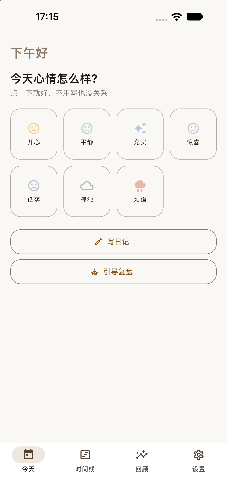

今天今天：点一下就够
七个心情选一个，今日就算记完了。也可以加一句话、勾几个影响因素（比如「睡得好」「见了朋友」），一分钟内完成。
Panda Mood Diary · iOS
心情不用组织语言：点一个图标就算今天记完了。想写的时候，再打开碎碎念。
所有记录只存在你的手机里，不上传任何服务器。
没有「你今天应该开心一点」。这里只有 7 个按钮，选哪个都行 —— 下面是 App 里的原图。
七个心情选一个，今日就算记完了。也可以加一句话、勾几个影响因素（比如「睡得好」「见了朋友」），一分钟内完成。
不想写也没关系。这里放下所有日记和图片，支持关键词搜索与草稿自动保存——写到一半退出也不会丢。
月末回顾会告诉你：哪些天心情更好、连续记录了多少天、常见的心情是什么，以及你自己的规律。
需要提醒就开启每日提醒（通知里只有一句中性提示，不含日记内容）；在意隐私就开 4–6 位 PIN 隐私锁。
下面是 iOS 模拟器里的实际运行截图，没有修图。

你勾选的影响因素会和当天的心情一起被记住。到了回顾页，App 会在你手机本机做一个简单对比：勾了「运动了」的那些天，平均心情是不是更高？「睡得好」的日子是不是更平稳？
提供两套小模板：今日三问（今天发生了什么、此刻的感受、明天想为自己做的一件小事）与想法记录（把一件烦心事拆成：发生了什么、我当时怎么想、换个角度怎么看、接下来怎么做）。照着问题写，不用自己想标题。
这是一个自我反思小工具，不构成医疗建议。
不需要注册、不需要登录，所有数据存放在 App 的本地沙盒里，不上传、不同步。
可设置 4–6 位 PIN，每次打开 App 都要输入。PIN 以加盐哈希存放，不存明文。
不含广告 SDK、行为分析或追踪 SDK，也不申请与功能无关的权限。
全部功能免费：无内购、无订阅、无广告。
隐私锁没有找回密码的入口——因为本地没有服务器，也就没有任何后门。这是它的代价，也是它的意义。完整说明见隐私政策。
免费下载。开始只需要点一下今天的心情。